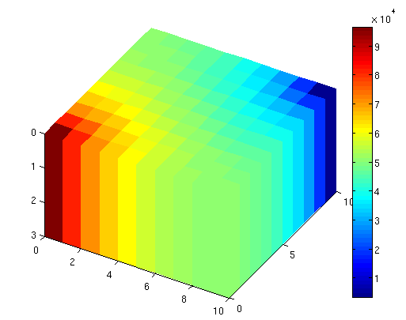
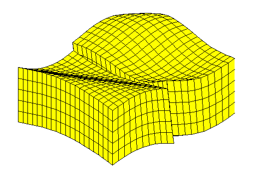

See Also
MRST
BattMo is based on the open-source sofware MRST.
MRSTwebpage is primarly dedicated to reservoir modelling and simulation and has been developed essentially by the Computational Geosciences group in the Department of Mathematics and Cybernetics at SINTEF Digital. The software contains generic functionalities such as
Discrete differential operators,
Automatic Differentiation support,
Newton solver API for easy integration of new set of equations and variables.
which BattMo relies heavily on.
On the MRSTwebpage webpage, you can find documentations and tutorials.
We recommend the following tutorials which deal with grid visualization and grid generation will be usefull for BattMo users.
Visualization Tutorial

Grid Factory Tutorial

see here.
FAIR Data
BattMo supports the FAIR data principles